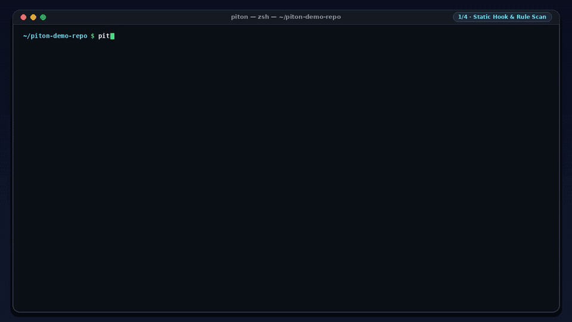

Pin MCP tool schemas and descriptions with split SHA-256 hashes, catch malicious .claude/settings.json hooks and bidi-poisoned .cursor/rules in CI, and replay shadow traces offline to export CEL or Cedar policies. Two Python runtime dependencies: pydantic and pyyaml.
# Zero-install instant scan:
uvx piton-cli scan --repo .
# Or test it right now against an intentionally poisoned demo repo (8 CRITICAL/HIGH findings):
git clone https://github.com/Tony-Stark2025/piton-vuln-demo.git && uvx piton-cli scan --repo piton-vuln-demo
# Install permanently via pipx or pip:
pipx install piton-cli # or: pip install piton-cli
# Pin MCP servers with split SHA-256 hashes (structural vs. description):
piton init --repo . --probe
# Wrap any local STDIO MCP server in Cursor or Claude Code:
piton wrap --enforce --server github -- npx -y @modelcontextprotocol/server-github
structural_sha256 hard-blocks schema changes everywhere. description_sha256 hard-blocks third-party rug pulls while warning on internal docstring edits so CI never breaks on typo fixes.
Catches .claude/settings.json curl|sh, reverse shells, credential harvesting, and Bash(*) wildcards, plus .vscode/tasks.json folderOpen autorun and hidden bidi Unicode in .cursor/rules.
Tokenizes PII while keeping domains and numeric bounds replayable, ingests OTel JSONL spans, calibrates false-block rates offline, and exports rules for agentgateway, ToolHive, AWS AgentCore, or Envoy ext_proc.
Fails pull requests on third-party MCP rug pulls, structural schema drift, cross-server tool shadowing, and coding-agent config RCE.
- name: Piton — AI Agent Supply-Chain & MCP Lockfile Gate
uses: Tony-Stark2025/piton@v0.4.2
with:
scan-only: "true" # or probe: "true" to also diff live MCP manifestsMulti-arch distroless Go sidecar (linux/amd64, linux/arm64) implementing Envoy v3 ext_proc gRPC with live tools/list rug-pull blocking, OIDC JWKS + RFC 8693 OBO, and response projection.
docker pull ghcr.io/tony-stark2025/piton-sidecar:0.4.2
helm install piton-sidecar ./deploy/helm/piton-sidecar \
--set image.repository=ghcr.io/tony-stark2025/piton-sidecar \
--set image.tag=0.4.2